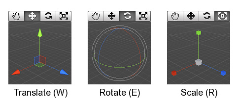
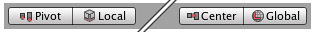
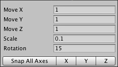

Positioning GameObjects
When building your games, you'll place lots of different objects in your game world.
Focusing
It can be useful to focus the Scene View Camera on an object before manipulating it. Select any GameObject and press the key. This will center the Scene View and pivot point on the selection. This is also known as Frame Selection.
Translate, Rotate, and Scale
Use the Transform Tools in the Toolbar to Translate, Rotate, and Scale individual GameObjects. Each has a corresponding Gizmo that appears around the selected GameObject in the Scene View. You can use the mouse and manipulate any Gizmo axis to alter the Transform Component of the GameObject, or you can type values directly into the number fields of the Transform Component in the Inspector. Each of the three transform modes can be selected with a hotkey - W for Translate, E for Rotate and R for Scale.

- Click and drag in the center of the Gizmo to manipulate the object on all axes at once.
- At the center of the Translate gizmo, there are three small squares that can be used to drag the object within a single plane (ie, two axes can be moved at once while the third is kept still).
- If you have a three button mouse, you can click the middle button to adjust the last-adjusted axis (which turns yellow) without clicking directly on it.
- Be careful when using the scaling tool, as non-uniform scales (e.g. 1,2,1) can cause unusual scaling of child objects.
- For more information on transforming GameObjects, please view the Transform Component page.
Gizmo Display Toggles
The Gizmo Display Toggles are used to define the location of any Transform Gizmo.

Gizmo Display Toggles
Gizmo Display Toggles
- Position:
- will position the Gizmo at the center of the object's rendered bounds.
- will position the Gizmo at the actual pivot point of a Mesh.
- Rotation:
- will keep the Gizmo's rotation relative to the object's.
- will clamp the Gizmo to world space orientation.
Unit Snapping
While dragging any Gizmo Axis using the Translate Tool, you can hold the key ( on Mac) to snap to increments defined in the Snap Settings.
You can change the unit distance that is used for the unit snapping using the menu

Scene View Unit Snapping settings.
Scene View Unit Snapping settings.
Surface Snapping
While dragging in the center using the Translate Tool, you can hold and ( on Mac) to snap the object to the intersection of any Collider. This makes precise positioning of objects incredibly fast.
Look-At Rotation
While using the Rotate Tool, you can hold and ( on Mac) to rotate the object towards a point on the surface of any Collider. This makes orientation of objects relative to one another simple.
Vertex Snapping
You can assemble your worlds more easily with a feature called Vertex Snapping. This feature is a really simple but powerful tool in Unity. It lets you take any vertex from a given mesh and with your mouse place that vertex in the same position as any vertex from any other mesh you choose.
With this you can assemble your worlds really fast. For example, you can place roads in a racing game with high precision and add power up items on the vertices of a mesh.

Assembling roads with Vertex Snapping.
Using vertex snapping in Unity is simple. Just follow these steps:
- Select the mesh you want to manipulate and make sure the Transform Tool is active.
- Press and hold the key to activate the vertex snapping mode.
- Move your cursor over the vertex on your mesh that you want to use as the pivot point.
- Hold down the left button once your cursor is over the desired vertex and drag your mesh next to any other vertex on another mesh.
- Release your mouse button and the key when you are happy with the results.
- acts as a toggle of this functionality.
- You can snap vertex to vertex, vertex to surface and pivot to vertex.
A video on how to use vertex snapping can be found here.
Page last updated: 2011-10-26